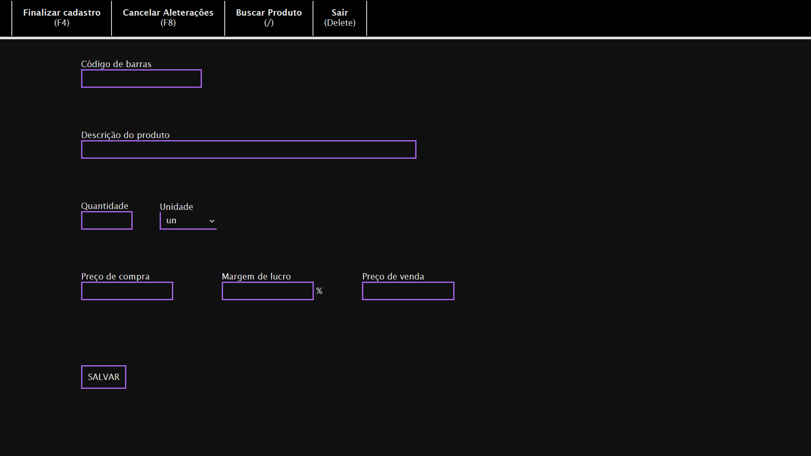
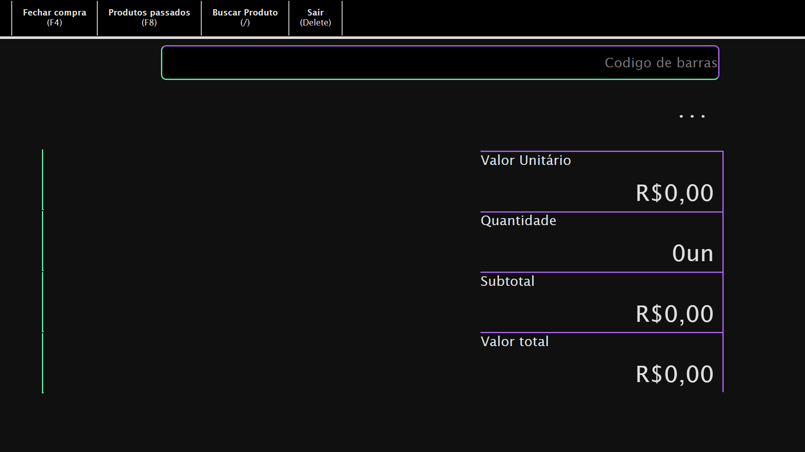
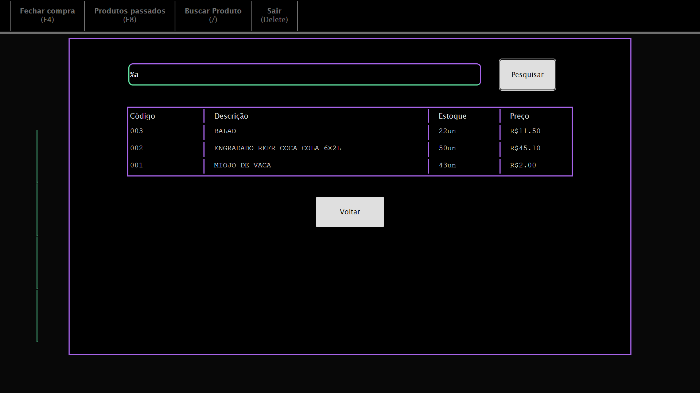

Bem vindo(a) à Documentação
Este é um sistema de gerenciamento de produtos e ponto de venda (PDV), semelhante aos utilizados em mercados, desenvolvido para fins de ganho de experiência e prática do desenvolvimento de software, com enfase na parte de Backend (lado do servidor).
Pela natureza deste tipo de sistema, o uso em dispositivos móveis tais quais tablets e smartphones é incomum, portanto, faz-se desnecessário e contraproducente a optimização do mesmo para uma boa adequação da interface para dispositivos Android e IOS.
Aqui estará disponível a forma de funcionamento deste sistema, dividido em:
| Informações Gerais; |
| Cadastro de Produtos |
| Interface de Vendas; |
Informações Gerais
Na página de login, deve-se utilizar um nome de usuário e uma senha. Após autenticado, o sistema reconhecerá o usuário por duas horas, desde que tente entrar novamente pelo mesmo navegador.
Caso você não possua uma conta de acesso, utilize as seguintes credenciais para entrar com permissões de "editor" e "caixa":
Usuário: convidado
Senha: lgHNLAdWr9sM
Erros podem ser reportados para o email soaresvictor479@gmail.com ou no Github.
Abaixo está disponível todo o código do programa, dividido em dois repositórios:
Módulo de Arquivos
Módulo de Dados
Contatos do desenvolvedor:
Github
Cadastro de Produtos
=> O botão F4 salva um novo cadastro ou todas as alterações feitas em um cadastro já existente.
=> O botão F8 cancela todas as alterações realizadas e não salvas de um cadastro.
=> O botão / abre a Ferramenta de Pesquisa.
=> O botão Delete cancela todas as alterações não salvas e retorna para o menu de escolha.
=> O campo "Código de Barras" aceita um código de até 15 dígitos, que deve ser único para cada produto, e após digitado, carrega por um momento, e então, se houver algum cadastro com o código nele inserido, preenche os demais campos de acordo com o cadastro, e alterações serão aplicadas sobre o cadastro já existente, caso contrário, ele não preenche nenhum campo e todos os dados inseridos serão salvos em um novo cadastro.
=> O campo "Descrição do Produto" é obrigatório e aceita um texto de até 40 caracteres, limitados a letras, números e espaços (" ").
=> O campo "Quantidade" é opcional e aceita um número inteiro. Caso não seja preenchido, define o valor como 0 (zero) por padrão.
=> O campo "Unidade" é opcional e aceita um tipo de unidade, como kg, m, un. Caso não seja preenchido, define o valor como un (unidade) por padrão.
=> O campo "Preço de compra" é opcional e aceita um número com até duas casas decimais. Caso não seja preenchido, define o valor como 0 (zero) por padrão.
=> O campo "Margem de Lucro" é opcional e aceita um número inteiro. Caso não seja preenchido, define o valor como 0 (zero) por padrão.
=> O campo "Preço de Venda" é opcional e aceita um número inteiro. Caso "Preço de compra" e "Margem de Lucro" sejam preenchidos, após teclar "Enter", o valor será calculado automáticamente, mas poderá ser alterado, caso contrátrio, deverá ser inserido manualmente. Caso não seja preenchido, define o valor como 0 (zero) por padrão.
=> O botão "Salvar" envia para o servidor os dados do produto, com todas alterações (caso seja um produto previamente existente).
Interface de Venda
=> O botão F4 abre a tela de finalização de compra, ignorando os produtos sem cadastro que foram passados, se hoverem.
=> O botão F8 abre a lista de produtos que foram passados na compra atual, marcando em vermelho aqueles cujos cadastros não foram encontrados.
=> O botão / abre a Ferramenta de Pesquisa.
=> O botão Delete ignora a venda atual caso ela não tenha sido fechada e volta para o menu de escolha.
=> O campo "Código de barras" aceita dois tipos de entrada: um código de barras, simplesmente (ex.: "7890123456789"), considerando-se assim, apenas uma unidade, ou uma quantidade seguida por um código de barras, separados por asterisco (ex.: "5*7890123456789")
=> O campo de descrição, localizado abaixo do campo "Código de Barras", mostra a descrição do produto referente ao último código de barras passado.
=> O campo "Valor Unitário" exibe o valor de venda de uma única unidade do produto referente ao último código de barras passado.
=> O campo "Quantidade" exibe o número de unidades passadas na compra atual do produto referente ao último código de barras passado.
=> O campo "Subtotal" exibe o resultado da múltiplicação da quantidade pelo valor unitário do produto referente ao último código de barras passado.
=> O campo "Valor Total" exibe o valor da soma de todos os produtos passados na compra atual. É o preço que o cliente pagará ao final.
=> Ao lado esquerdo da tela há uma lista, que exibe até 4 itens, os mais recentes da compra atual.
Ferramenta de Pesquisa
=> O campo "Nome do produto" aceita letras, números, espaços (" ") e o caractere especial "%", utilizado para indicar que pode haver um ou mais caracteres naquela posição.
=> O botão "Pesquisar" gera uma lista com todos os resultados compatíveis com a pesquisa e os ordena por ordem alfabérica. Se um item for clicado, ele será selecionado (contará como um item passado caso esteja na Interface de Vendas;, ou carregará o produto para realizar alterações caso esteja no Cadastro de Produtos